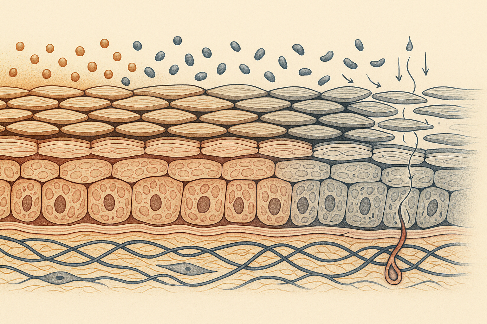
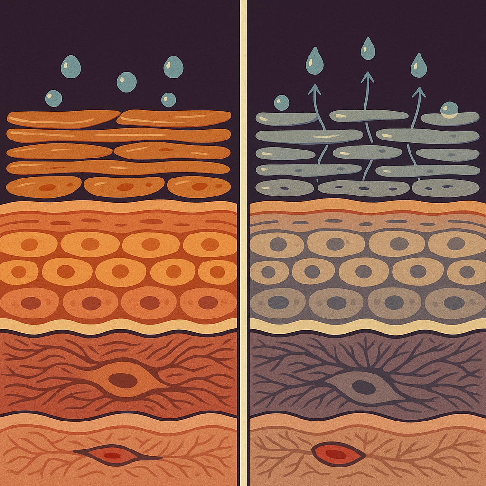
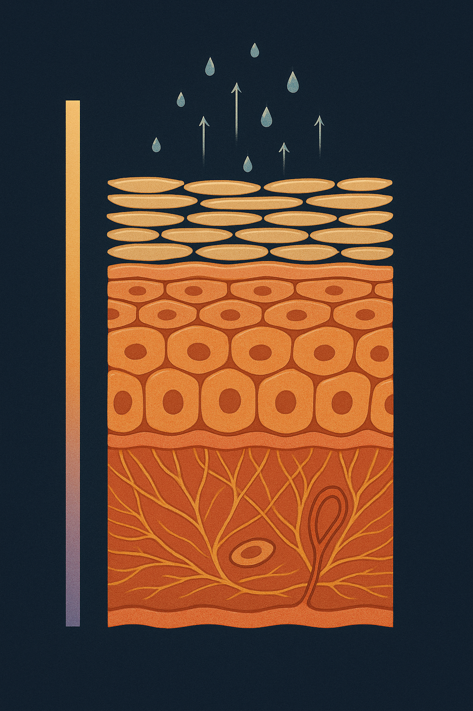

Review below. Reply approve to publish the Facebook post, or tell me edits.

Most of us were taught that a tight, squeaky face means clean. It is closer to the opposite. That feeling is a chemistry signal, and it is one of the few skin variables you control twice a day, every day, for free.
Here is what the tightness is actually reporting.
The outer surface of healthy skin sits at a pH of roughly 4.7 to 5.5. Slightly acidic, and deliberately so. Pure water sits at 7. A traditional soap bar sits somewhere between 9 and 10.
Translate the pH scale once and the rest of this article gets easier. It is logarithmic, so each whole number is a tenfold change.
> A pH 9 cleanser is not "a bit different" from your skin at pH 5. It is four steps away, roughly ten thousand times less acidic.
That is the gap you are asking your face to absorb.
When researchers measured skin that had been left alone rather than freshly washed, the natural surface pH came in lower than the textbook figure of 5.5, averaging below 5 (Lambers et al., 2006). The baseline is more acidic than most of us assume.
The top layer of your skin is often described as bricks and mortar: flattened dead cells held in a matrix of lipids, largely ceramides, cholesterol and fatty acids. That mortar is what keeps water in and irritants out.
The mortar is not delivered ready-made. It is assembled on site by enzymes, including beta-glucocerebrosidase and acidic sphingomyelinase, the ceramide-making machinery. Those enzymes have a narrow acidic operating window. They work properly in acid and slow down as the surface becomes more neutral.
Meanwhile, a different set of enzymes does the opposite job. Serine proteases break the bonds holding surface cells together so old cells can shed. Those speed up as pH rises.
So raising the surface pH does two things at once: it slows the building crew and speeds up the demolition crew. Experimental work has shown this is not a side effect of the wash, it is the pH itself directly driving barrier recovery and how well the surface layer holds together (Hachem et al., 2003).
Follow the chain. Surface lipids are stripped by the surfactant. The mortar loosens. Water then leaves the surface faster than it is replaced, which is transepidermal water loss, and the outer layer dries and shrinks very slightly as it loses that water.
You feel that shrinkage as tightness.
Which reframes the sensation entirely. Tightness is a barrier report, not a cleanliness score. The squeak you were taught to chase is the sound of a surface with nothing left on it.
Skin is good at restoring its own acidity. It just does not do it in five minutes. Recovery after washing runs over hours.
That timing is the whole argument. If you wash twice a day, a meaningful share of your waking hours is spent at an off-baseline pH, with the building enzymes underperforming the entire time. In one crossover trial, people who washed with soap for four weeks held a measurably higher skin pH across that period than when they used a synthetic detergent instead (Korting et al., 1987). Habitual washing shifts the baseline, not just the moment.
This is a compounding input, not a dramatic one. Small, daily, and largely invisible.
Nothing here costs money. Work through it once.
Every step that follows lands on whatever surface your cleanser left behind. Your actives, your hydrators, your sunscreen, and yes, a ten-minute red light therapy session at home, all meet that surface first. Light therapy is a step that sits on top of a routine. It does not replace the basics underneath it.
The cheapest thing in your bathroom sets the conditions for everything you spent real money on.
And to be clear about the sensation itself: tight is not damage. It is a signal, and signals are worth reading rather than ignoring.
This is general skin education. A light therapy device is a cosmetic device, not medicine.
If you ever want a closer look at what we make, the mask and the full spec are here.
What does your face feel like five minutes after you wash it, tight, comfortable, or you have never actually checked?
#skinbarrier #skinpH #skincarescience #acidmantle #cleansing #sensitiveskin #skinlongevity #skincaretips

That squeaky-clean feeling after you wash your face is not clean skin. It is your barrier telling you it just lost the fight.
Your skin's surface is acidic on purpose, roughly 4.7 to 5.5. Traditional soap sits up around 9 to 10, and on the pH scale every whole number is a tenfold jump. That is not a small gap.
Here is why the acid matters. The enzymes that build the lipid mortar between your surface cells only work properly in an acidic range. The enzymes that loosen and shed cells speed up as pH climbs. Push the surface alkaline and you slow the builders while you speed up the demolition crew.
That tight feeling afterwards is water leaving faster than it is replaced. It is a barrier report, not a cleanliness score.
Tight is not damage. It is a signal, and signals are worth reading.
The fix costs nothing. Lukewarm water, not hot. A low-foam cream, milk or gel cleanser (or a syndet bar) rather than a true soap. Seconds of contact, not minutes. Moisturiser onto damp skin, so you are trapping water rather than chasing it.
General skin education only. A light therapy device is a cosmetic device, not medicine.
Five minutes after you wash your face, does it feel tight, or comfortable? Most people have never actually stopped to check.
#skinbarrier #skincarescience #skinhealth #skinlongevity
FIRST COMMENT (post the link here, not in the post body): If you ever want a closer look at what we make, it is here: https://redermis.com.au/products/red-light-therapy-face-neck-mask

Squeaky clean is not a compliment.
Your skin's surface is acidic on purpose. Roughly 4.7 to 5.5.
Traditional soap sits near 9 to 10. On the pH scale, every whole number is a tenfold jump, so that gap is bigger than it looks.
Here is the part nobody mentions. The enzymes that build your barrier's lipid mortar only work in acid. The enzymes that loosen and shed cells speed up as pH rises.
So an alkaline wash slows the builders and speeds the strippers, at the same time.
That tight feeling afterwards is water leaving faster than it is being replaced. A barrier report, not a cleanliness score.
Tight is not damage. It is a signal, and signals are worth reading.
Four changes that cost nothing: lukewarm water, not hot. A low-foam cream, milk or gel cleanser. Seconds of contact, not minutes. Moisturiser onto damp skin.
That last one matters more than it sounds. Damp skin still holds the water from your rinse, so a moisturiser goes on to seal water that is already there. Wait ten minutes and it has gone, and you are asking a cream to replace what it never had.
Light therapy sits alongside this, never instead of it.
Closer look at what we make: link in bio.
It is a cosmetic device. General skin education, not medicine.
Five minutes after you wash. Worth a look tonight. Tight, or comfortable?
#skinbarrier #skinhealth #skincarescience #skinph #cleanser #dryskin #sensitiveskin #skinlongevity #australianskincare #redlighttherapy #barrierrepair
## Title
Tight after cleansing is a skin pH problem, not clean skin
## Description
Why does my face feel tight after washing? Your skin surface sits at roughly 4.7 to 5.5, acidic on purpose, and the enzymes that rebuild ceramides work best in that range. An alkaline cleanser pushes it off baseline for hours, so the tightness is water leaving faster than it is replaced. The audit: five minutes after cleansing, apply nothing. If it feels tight, the cleanser is too strong for you. Rinse lukewarm, seconds of contact, moisturise onto damp skin. General skin education, not medicine.
## CTA
If you ever want a closer look at what we make, it is here: https://redermis.com.au/products/red-light-therapy-face-neck-mask
## Destination URL
https://redermis.com.au/products/red-light-therapy-face-neck-mask
## Hashtags
#skinbarrier #skinph #skincaretips #cleanser #dryskin #facecareroutine
Note: this pin reuses the Instagram image.